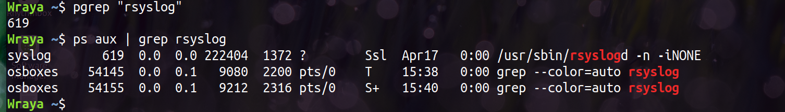
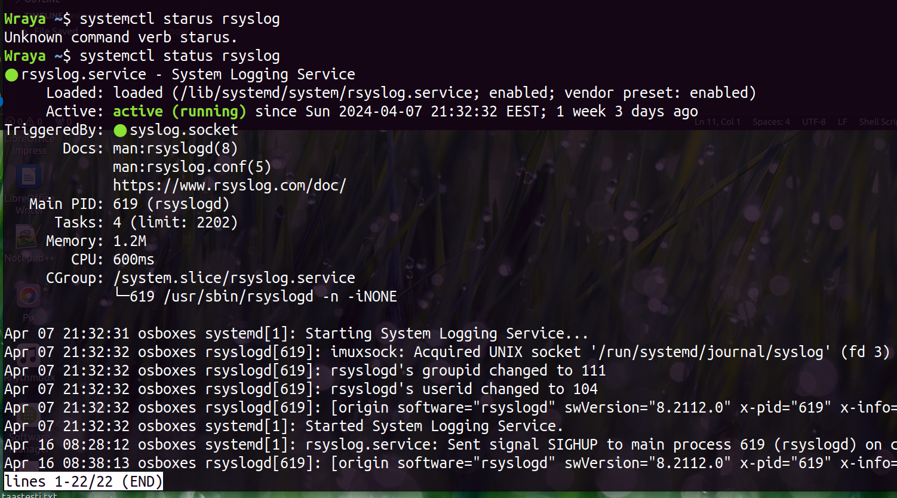
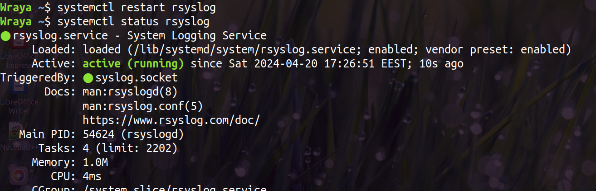
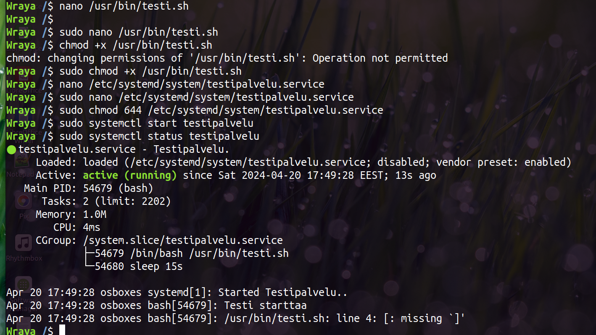

Rsyslog (www.rsyslog.com) on avoimen koodin ohjelma lokiviestin välittämiseen verkossa. Se perustuu syslog-prokollaan ja siinä on laajennettu erilaisilla ominaisuuksilla.(Wikipedia: Rsyslog)
Haettu rsyslogin PID-numero: 619.

Haettu palveluita, jotka enabled ja jotka running. Koska listat olivat pitkiä, niin rajasin vielä grep-komennolla vain rsyslogiin. Rsyslog oli käytössä ja käynnissä.
Haettu rsyslogin statustietoja, jossa kaikki tiedot helpommin näkyvillä.

Uudelleenkäynnistä Rsyslog
Suljetaan ja käynnistetään rsyslog. Sekä sama yhdellä komennolla: restart.

Luo uusi palvelu "testi"
Loin palvelun harjoitusohjeen mukaisesti. Status osoitti, että olin kirjoittanut ohjelmaan virheen...

Korjatty skripti ja käynnistetty palvelu uudestaan.
Uudellenkäynnistetyn testi-palvelun PID on 54721. Status-haulla saa näkyville palvelun nimen ja kuvauksen (Testipalvelu) ja lataustiedon (mistä ladattu /etc/systemd...). Statustiedoissa näkyy myös se, että palvelu on aktiivinen. Palvelu käyttää muistia 536K ja miten paljon CPU:ta käyttää 3ms. Sen jälkeen näkyy ryhmän tietoja ja tarkemmin prosessin-tiedot ja siihen liittyvät komennot. Lopussa näkyvät palveluun liittyvät tapahtumat, kuten sen, että palvelu alkoi, testi starttasi ja sitten myös viestin Directory /home/ exists, joka tulostetaan 15s välein.